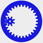

An open source, browser based utility for calculating and drawing involute spur gears. As an improvement over the majority of other freely available scripts and utilities it fully accounts for undercuts. For additional information please head over to my blog posts part 1 and part 2. If you prefer a standalone utility and you use Windows 64, see Doug Roger's port to C++.
The page runs in modern browsers with SVG support (if in doubt, use Chrome). The generated SVG drawing can be downloaded and imported in CAD applications or opened in the open source SVG editor Inkscape to export as dxf or other formats.
The implementation is inspired by the subtractive process that Michal Zalewski's describes in part six of his excellent Guerrilla guide to CNC machining, mold making, and resin casting.
Specify desired values in the parameters box and then click on the 'Update' button. The tooth count n1 of gear one defines various configurations:
The tool also supports profile shift to reduce the amount of undercut in gears with low tooth counts.
Once the gears are rendered you can use the mouse scroll wheel or the slider underneath the window to zoom in and out. For panning move the mouse while pressing the left mouse button.